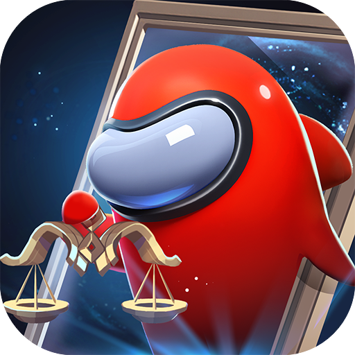

Among Us
《Among Us》的游戏场景设置在太空等地，4-15名玩家可联机游玩，其中藏匿了1-3名伪装者。船员需要在伪装者击杀所有人之前合作完成任务。

太空杀
《太空杀》是一款多人社交推理手游，游戏支持4至15位玩家一起玩，内置太空狼人杀、大逃杀、躲猫猫等玩法。游戏将场景设计在宇宙飞船或空间站内进行，玩家被分为不同阵营，主线任务是修复飞船上的各类设施，船员阵营要完成一系列解谜任务，破坏者阵营则密谋破坏，在一步步悬疑、推理中尽享游戏乐趣。

Super Sus
太空杀国际服。

原神
游戏发生在一个被称作“提瓦特大陆”的幻想世界，在这里，被神选中的人将被授予“神之眼”，导引元素之力。玩家将扮演一位名为“旅行者”的神秘角色，在自由的旅行中邂逅性格各异、能力独特的同伴们，和他们一起击败强敌，找回失散的亲人——同时，逐步发掘“原神”的真相。

崩坏:星穹铁道
游戏中，玩家将登上星穹列车，造访寓居宇宙的万象世界，携手形形色色的旅伴，解救“星核”引发的种种危机，对抗“星神”践踏文明的意图。

王者荣耀
《王者荣耀》的玩法以竞技对战为主，玩家可以利用地图上的资源使自己不断变强，杀死野怪、小兵、敌人，就能获得一定的经验和经济，获得所有必要的装备。获得大量经济可以购买装备，使自己更强大，摧毁敌方防御塔，最终胜利的条件是摧毁敌人的水晶。玩家之间进行1V1、3V3、5V5等多种方式的PVP对战，在满足条件后可以参加游戏的排位赛等，还可以参加PVE的闯关模式，是属于推塔类型的游戏。